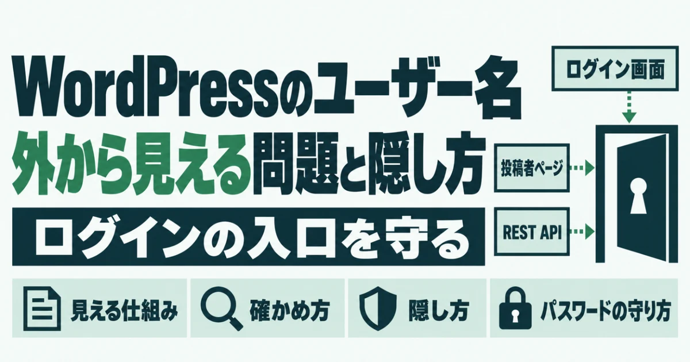
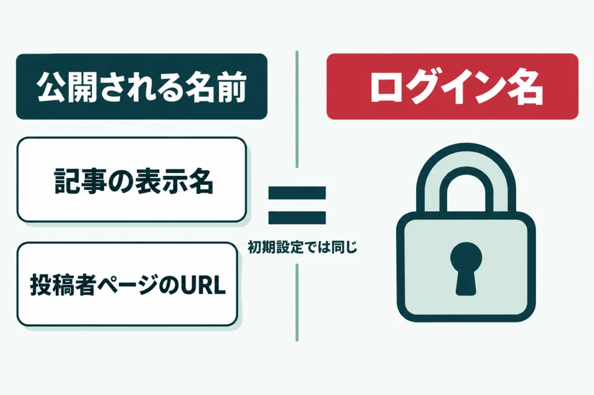
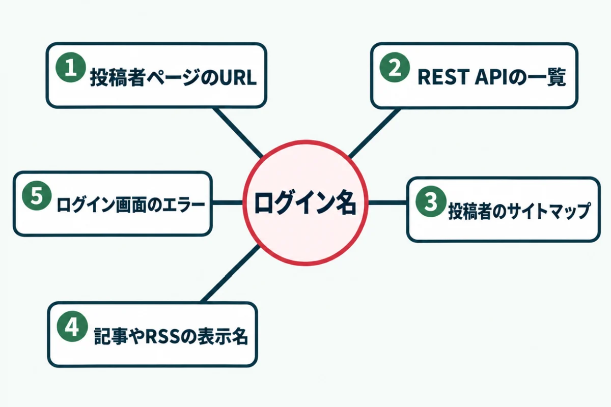
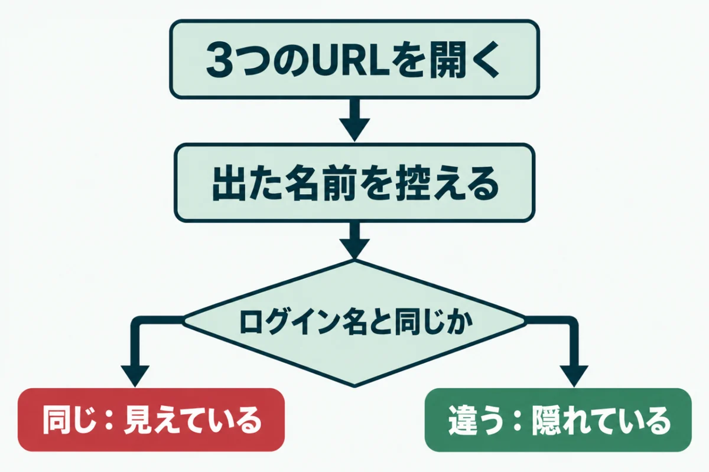
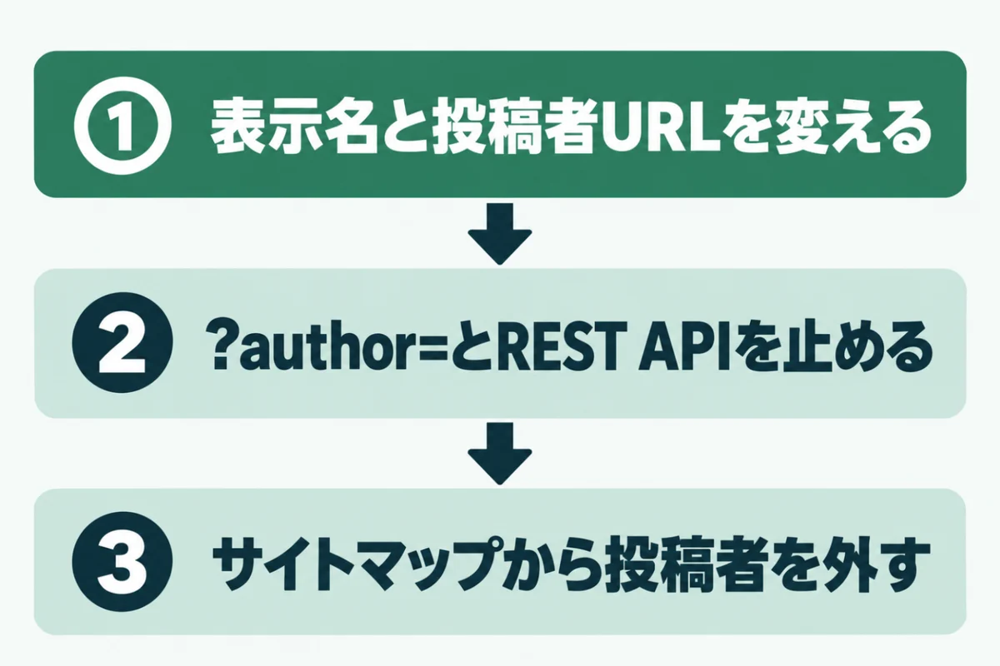
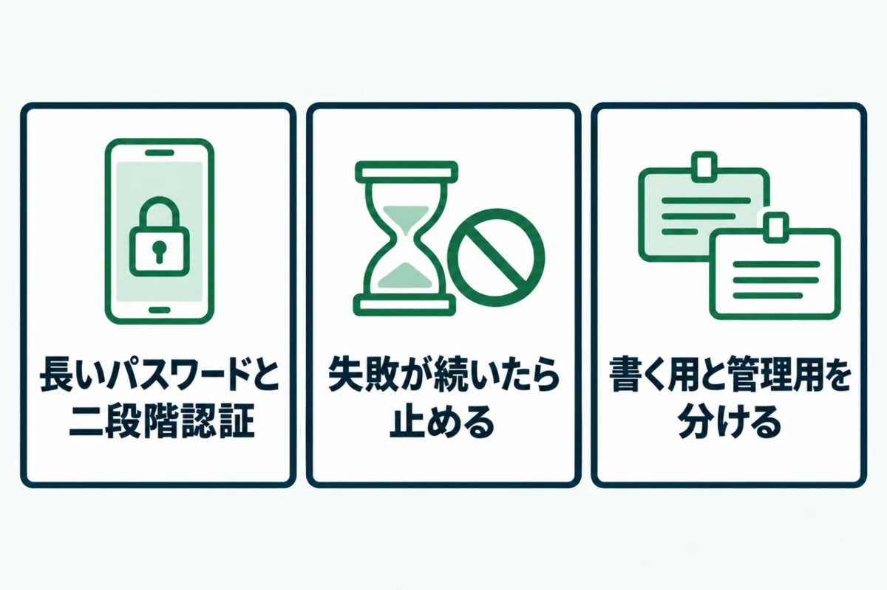

WordPressのユーザー名が漏洩する5つの経路と隠し方見えているかの確かめ方

「WordPressのユーザー名が外から見えるらしい」と聞いて、不安になっていませんか？
実は、初期設定のままだと、ログインに使う名前を誰でも調べられる状態のサイトが少なくありません。
この記事では、WordPressのユーザー名が漏洩する5つの経路と、隠す手順を紹介します。自分のサイトで見えているかを確かめる方法もまとめました。
運営者の自社サイトで実際に見つけて直した例も入れています。隠すだけで終わらせず、破られないための備えまで一度に見直してください。
WordPressのユーザー名が漏洩すると何が起きるか

WordPressのユーザー名が漏洩すると、ログインを破る材料を相手に渡すことになります。パスワードさえ分かればログインできる状態になるためです。
ただし、ユーザー名が見えただけで、すぐに乗っ取られるわけではありません。何が危ないのかを正しく知ったうえで、対策の順番を決めましょう。まずは、名前が漏れる仕組みと、守りの中での位置づけを押さえておきます。
ユーザー名はログインの鍵の半分
WordPressの管理画面には、ユーザー名とパスワードの2つを入れてログインします。ユーザー名が分かれば、攻撃する側はパスワードを当てることだけに集中できるのです。
総当たりで試す回数がぐっと減るため、破られる危険が高まります。WordPress.orgの日本語の解説によると、総当たりの攻撃は組み合わせを次々に試すものです。単純な名前やパスワードほど、早く当てられてしまうでしょう。特に管理者の名前が知られると、サイト全体を操作される入口になります。
公開される名前は、初期設定ではログイン名と同じ
WordPressには、ログイン名とは別に「表示名」と「投稿者URLの名前」があります。公式の資料によると、どちらも作成時の初期値はログイン名をもとに決まる仕組みです。
つまり、何も変えなければ、記事に出る名前がそのままログイン名になってしまいます。REST APIが返すのはログイン名ではなく、投稿者URLの名前です。ただ、その名前が初期値のままなら、ログイン名を教えているのと変わりません。名前とログイン名を別にしておくことが、対策の出発点になります。
隠すだけでは守れない
ユーザー名を隠しても、パスワードが弱ければ別の方法で破られることがあります。ユーザー名は、ほかのサービスから漏れた情報で知られてしまう場合もあるでしょう。
そのため、隠すことはパスワードと二段階認証を強くしたうえでの上乗せと考えてください。上乗せの対策でも、狙われる回数を減らす効果は十分にあります。手間は少ないので、あわせて済ませておくのがおすすめです。どちらか一方ではなく、両方をそろえることを目指しましょう。
WordPressのユーザー名が漏洩する5つの経路

WordPressのユーザー名が漏洩する経路は、主に5つあります。どれもWordPress本体の標準の動きで、特別な道具がなくても誰でも確かめられるものです。
1つだけふさいでも、ほかの経路から同じ名前が分かってしまいます。順に見ていき、自分のサイトに当てはまるものを洗い出してください。経路ごとに、確かめ方と止め方も違います。
① 投稿者ページのURL（?author=数字）
サイトのアドレスの後ろに「?author=1」と付けて開くと、投稿者ページに移ります。移った先のURLには、投稿者URLの名前がそのまま入る仕組みです。
WordPress本体では、記事を公開したことのある投稿者がこの転送の対象になります。数字を2、3と変えていけば、投稿者を1人ずつ順に調べられるでしょう。攻撃の道具は、この確かめ方を自動で繰り返しています。数字を順に試すだけなので、時間もほとんどかかりません。
② REST APIのユーザー一覧
「/wp-json/wp/v2/users」を開くと、投稿者の一覧が文字のデータで返ってきます。ログインしていない人にも、記事を公開した投稿者の名前と投稿者URLの名前が見える仕様です。
公式の資料では、ログイン名やメールアドレスは編集用の項目で、外には出ません。それでも、投稿者URLの名前がログイン名と同じなら、守れていないのと同じです。ブロックエディタなどもこの仕組みを使うため、止め方には注意が必要になります。
③ 投稿者のサイトマップ
WordPress本体は、検索エンジン向けのサイトマップを自動で作ります。その中に「wp-sitemap-users-1.xml」という投稿者の一覧が含まれる仕組みです。
中には投稿者ページのURLが並ぶため、投稿者URLの名前がまとめて分かってしまいます。ほかのサイトマップのプラグインを使っていると、このファイルが出ていないこともあるでしょう。「/wp-sitemap.xml」を開き、usersを含む行があるかを見てください。
④ 記事やRSSに出る表示名
記事の投稿者欄には、プロフィールで選んだ「ブログ上の表示名」が出ます。この表示名は、RSSの投稿者欄にも同じように書き出される仕様です。
運営者の自社サイトでも、表示名がログイン名のままRSSに出ていました。ページの見た目では投稿者名を消していても、RSSには残ることがあります。見落としやすい経路なので、ほかの経路とあわせて確かめておきましょう。RSSは、サイトのURLの後ろに「/feed/」を付けると開けます。
⑤ ログイン画面のエラーメッセージ
ログイン画面で存在しないユーザー名を入れると、登録されていないという趣旨のエラーが出ます。ユーザー名は合っていてパスワードだけが違うと、別の文が出る仕組みです。
文の違いから、そのユーザー名が本当にあるかを確かめられてしまいます。WordPress本体のプログラムでも、この2つは別々の文として用意されているのです。エラーの文をそろえる設定やプラグインで、違いをなくせます。ログインの失敗が続いたら止める仕組みと組み合わせると、さらに効果が上がるでしょう。
WordPressのユーザー名が漏洩していないか確かめる方法

WordPressのユーザー名が漏洩していないかは、ブラウザだけで確かめられます。表示された名前とログイン名を比べるのが判断のポイントです。
名前が出ること自体より、それがログイン名と同じかどうかが問題になります。作業は5分ほどで終わるので、管理しているサイトごとに一度試してください。見るのは、3つのURLと管理画面の2か所です。
ブラウザで3つのURLを開く
まず、次の3つのアドレスを、サイトのURLの後ろに付けて開きます。
| 付けるもの | 見るところ |
|---|---|
| /?author=1 | 移った先のURLの「/author/」の後ろ |
| /wp-json/wp/v2/users | 「slug」と「name」の値 |
| /wp-sitemap-users-1.xml | 並んでいる投稿者ページのURL |
数字を2、3と変えて、ほかの投稿者もあわせて見ておきましょう。このとき、ログインしていない状態で開くことが大切です。ブラウザのシークレットウィンドウを使えば、外から見た状態になります。ページが見つからない表示になれば、その経路はふさがっていると判断できるでしょう。どれか1つでも名前が出ていれば、次の手順で比べてみてください。スマホからでも同じように確かめられます。
表示された名前とログイン名を比べる
次に、管理画面の「ユーザー」を開き、自分のユーザー名を確かめます。先ほど控えた名前と同じなら、ログイン名は外から見えている状態です。
大文字や記号がURL用に変わっていても、ほぼ同じなら見えていると考えておくのが安全でしょう。ログイン名が「admin」のような推測しやすいものなら、急いで対策が必要になります。管理者が複数いるサイトでは、全員の分を確かめてください。ユーザー名は、ユーザーの一覧の「ユーザー名」の列で分かります。
海外からの点検で見えなくても安心しない
エックスサーバーには、国外から「/wp-json」へのアクセスを止める設定があります。この設定は、初期状態で有効になっている仕組みです。そのため、海外のサーバーから点検すると、REST APIの一覧が拒否されて見えません。
運営者の作業環境からも同じように拒否されましたが、国内からは見えている可能性があります。点検は、国内の回線から行うのが確実です。ほかのサーバーでも、似た制限の設定がないかを確かめておくと、結果を読み違えずに済みます。
WordPressのユーザー名の漏洩を防ぐ手順

ユーザー名の漏洩を防ぐ第一歩は、公開される名前をログイン名と別にすることです。名前が別になれば、経路が残っていてもログイン名は分からなくなります。
そのうえで不要な経路を止めると、守りはさらに固くなるでしょう。作業の前には、念のためバックアップを取っておいてください。どの手順も、管理画面とプラグインの操作だけで進められます。
表示名と投稿者URLの名前を変える
表示名は、管理画面の「ユーザー」の「プロフィール」で変えられます。「ニックネーム」に別の名前を入れ、「ブログ上の表示名」でその名前を選ぶだけです。
投稿者URLの名前は、管理画面の標準の画面では変えられません。専用のプラグインを使うか、データベースを直接書き換える方法になります。運営者の自社サイトでは、古い投稿者URLから新しいURLへの転送も設定しました。転送を入れておけば、古いURLを開いた人も新しいページにたどり着けます。
?author=とREST APIの一覧を止める
?author=数字で開かれたときは、トップページへ転送するように設定します。REST APIは全部を止めず、ログインしていない人へのユーザー一覧だけを止めるのが基本です。
全部を止めると、ブロックエディタやほかのプラグインが動かなくなるおそれがあります。運営者の自社サイトでは、コードを追加するプラグインで2つとも止めました。テーマのファイルを触らずに済むので、テーマを更新しても設定は消えません。セキュリティのプラグインにも、同じ機能を持つものがあります。
サイトマップから投稿者を外す
WordPress本体のサイトマップは、投稿者の一覧だけを外すことも可能です。公式の開発者向けの資料のページに、投稿者の一覧を外すコードの例が寄せられています。
投稿者ページを検索に出す必要がなければ、外しても集客への影響は小さいでしょう。サイトマップのプラグインを使っている場合は、その設定画面で投稿者を外せることが多いです。変えたあとは「/wp-sitemap.xml」を開き、usersの行が消えたかを確かめてください。
WordPressのユーザー名が漏洩しても破られないための備え

WordPressのユーザー名は、すべての経路を隠し切れるとは限りません。知られても破られない状態にしておくことが、本当の守りになります。
次の3つは、どれも費用をかけずに始められるものです。ユーザー名を隠す作業とあわせて、同じ日に済ませてしまいましょう。どれも一度設定すれば、あとは手間がかからない点も助かるところです。
長いパスワードと二段階認証にする
パスワードは長く、ほかのサービスと使い回さないものにします。WordPress.orgの日本語の解説も、名前や辞書の語、短い文字列を避けるよう勧めているのです。
あわせて、ログインのたびに確認コードを入れる二段階認証も入れておきましょう。パスワードが知られても、手元のスマホがなければログインできなくなります。総当たりの手口については、中小企業のホームページが狙われる理由で詳しく紹介しました。使い回しをやめるだけでも、ほかのサービスから漏れた情報で破られる心配は減ります。
ログインの失敗が続いたら止める
短い時間にログインの失敗が続いたら、しばらく受け付けないようにする仕組みが効果的です。エックスサーバーでは「ログイン試行回数制限設定」が初期状態で有効になっています。
公式マニュアルによると、制限は24時間後に解除される仕組みです。ほかのサーバーでも、サーバーの機能かプラグインで回数を制限することができます。自分のサーバーに同じ機能があるか、管理画面で一度確かめておくと安心でしょう。制限がかかったときに自分が締め出されないよう、解除の方法も控えておいてください。
記事を書くアカウントと管理するアカウントを分ける
REST APIの一覧や投稿者ページに出るのは、記事を公開したことのある投稿者だけです。そのため、記事を書く用と管理する用のアカウントを分けると、管理者の名前は表に出にくくなります。
記事を書く側には「編集者」や「投稿者」の権限だけを与えましょう。ログイン名が「admin」のままなら、新しい管理者を作って記事を引き継ぐのも1つの方法です。WordPress.orgの日本語の解説も、adminは削除か権限の変更を勧めています。
URLを入れるだけで、投稿者ページやREST APIから名前が読めるかを含む7項目を無料で判定します。登録はいりません。
無料で診断するWordPressのユーザー名の漏洩に関するよくある質問
WordPressのユーザー名そのものは変えられますか？
管理画面のプロフィールでは、ユーザー名は変更できない仕様です。変えたい場合は、新しいユーザー名で管理者を作り、記事を引き継いでから古いほうを削除します。削除の画面で、記事を新しいユーザーに割り当てることを忘れないでください。データベースを直接書き換える方法は、失敗すると戻せなくなるため勧めません。作業の前には、必ずバックアップを取りましょう。
投稿者URLの名前を変えると、検索順位に影響しますか？
投稿者ページが検索から多く見られていなければ、影響はほとんどありません。変える前に、古い投稿者URLが検索結果に出ているかを確かめておくと安心です。出ている場合は、古いURLから新しいURLへ転送を設定しましょう。記事の中やプロフィールの欄に、古い投稿者URLを直接書いている場合もあります。運営者の自社サイトでも、トップページに古いURLが残っていたため書き換えました。
REST APIを止めると、ブロックエディタは動かなくなりませんか？
ログインしていない人へのユーザー一覧だけを止める方法なら、ブロックエディタには影響しません。ブロックエディタは、ログインした状態でREST APIを使うためです。一方、REST API全体を止めると、エディタやお問い合わせフォームが動かなくなることがあります。プラグインで止める場合は、どの範囲を止める設定かを確かめてください。止めたあとは、記事の編集と保存が今までどおりできるかを試しておきましょう。
ユーザー名が「admin」のままです。どうすればいいですか？
adminは推測されやすい名前なので、早めに変えることをおすすめします。新しいユーザー名で管理者を作り、記事を引き継いでから、adminのユーザーを削除する流れです。WordPress.orgの日本語の解説でも、この方法が紹介されています。あわせて、パスワードを長いものに変え、二段階認証も入れてください。ログイン名を変えるだけでなく、破られにくくすることまで済ませると安心でしょう。
自分で確かめるのが不安なときはどうすればいいですか？
サイトドックの無料簡易診断では、投稿者ページやREST APIから名前が読めるかを判定します。読めた名前がログイン名と同じかは、管理画面のユーザー名と比べて確かめてください。結果を見て、見えている項目から順に対策していけば十分です。設定を変えるのが難しい場合は、有料の対策作業でログイン制限などの設定もお任せいただけます。まずは、今の状態を知るところから始めましょう。
まとめ
WordPressのユーザー名は、主に5つの経路から外に見えることがあります。初期設定では、公開される名前がログイン名と同じになるためです。
まず表示名と投稿者URLの名前を変え、不要な経路を止めてください。そのうえで、長いパスワードと二段階認証、ログイン回数の制限で守りを固めましょう。
今日のうちに、自分のサイトで「?author=1」を開いてみるところから始めてみてください。
まずは、今の状態を知るところから。
URLを入れるだけで、数十秒で判定が出ます。登録はいりません。